Two Model German Credit Analysis
Summary
The performance of Corels on test data is compared to an XGboost walkthrough of tidymodels with drake.
Precision is an important metric for loan decisions (i.e. when a good loan is predicted, how often it is true). In this example, on unseen test data, XGBoost achieves 82% accuarcy (107 / (107 + 23)) vs. 78% (117 / (117 + 34)) for Corels. The null accuracy (always predicting the most frequent class of a good loan) is 71% (142 / (142 + 57).
While XGBoost performs better, the Corels rules are short and easy to interpret. Also, the accuracy achieved by the two methods is similar (XGBoost 72% vs. Corels 70%).
Background
Corels are ‘Certifiably Optimal RulE ListS’. They are short and simple human interpretable rule lists created on categorical data.
This analysis compares the performance of a simple Corels rule set to xgboost on German credit data.
The xgboost modelling of the german credit data is adapted from this excellent test of tidymodels with drake.
Data Preparation
Data source
The german credit data is downloaded and prepared.
library(tidymodels)
library(tidypredict)
library(corels)
library(tidycorels)
library(funModeling)
library(pROC)
library(easyalluvial)
library(parcats)
library(networkD3)
library(formattable)
library(visNetwork)
dataset_url <- "https://www.openml.org/data/get_csv/31/dataset_31_credit-g.arff"
clean_df <- read.table(file = dataset_url,
header = TRUE,
sep = ",") %>%
janitor::clean_names(., "small_camel") %>%
dplyr::mutate(class = case_when(class == "bad" ~0, class == "good" ~ 1),
class = as.factor(class))Data Splitting
We first split the data into 80% training data and 20% test to evaluate the final model chosen. Folds of the training data are also created for cross-validation when building a classifier with XGBoost.
set.seed(seed = 943)
training_split <-
rsample::initial_split(
data = clean_df,
prop = 0.8
)
trainData <- rsample::training(training_split)
testData <- rsample::testing(training_split)
set.seed(seed = 1738)
folds <- rsample::vfold_cv(trainData,
v = 5
)Data exploration
Let’s quickly explore the relationship between each predictor and the outcome of a good or bad loan.
We use the funModels package to bin or categorise numeric predictors to maximise the information gain ratio. From this we can more easily “semantically describe the relationship between the input and the target variable”.
We also store the cut points of the categorised continuous columns to be used later when preparing the data for Corels.
# https://blog.datascienceheroes.com/discretization-recursive-gain-ratio-maximization/
trainData_cat <-
trainData %>%
dplyr::mutate(dplyr:::across(
.cols = c(duration, creditAmount,age),
list(~ funModeling::discretize_rgr(input = .x, target = class)),
.names = "{col}Cat"
))
vars <- base::colnames(dplyr::select(trainData_cat, dplyr::contains("Cat")))
age_cat_cuts <-
trainData_cat %>%
group_by(ageCat) %>%
dplyr::summarise(min = min(age), .groups = 'drop') %>%
dplyr::pull(min)
duration_cat_cuts <-
trainData_cat %>%
group_by(durationCat) %>%
dplyr::summarise(min = min(duration), .groups = 'drop') %>%
dplyr::pull(min)
amount_cat_cuts <-
trainData_cat %>%
group_by(creditAmountCat) %>%
dplyr::summarise(min = min(creditAmount), .groups = 'drop') %>%
dplyr::pull(min)This function will plot each predictor against the outcome.
plot_fun <- function(cat) {
cat <- rlang::ensym(cat)
trainData_cat %>%
dplyr::group_by(!!cat, class) %>%
dplyr::summarise(n = n(), .groups = 'drop') %>%
ggplot2::ggplot() +
ggplot2::aes(
x = !!cat,
y = n,
fill = forcats::fct_rev(class),
label = n
) +
ggplot2::geom_bar(
position = "fill",
stat = "identity"
) +
ggplot2::geom_text(
size = 3,
position = position_fill(vjust = 0.5),
colour = "black"
) +
ggplot2::theme_minimal() +
ggplot2::coord_flip() +
ggplot2::scale_y_continuous(labels = scales::percent) +
ggplot2::theme(
panel.grid.major.x = element_blank(),
panel.grid.minor.x = element_blank(),
panel.border = element_blank(),
strip.text.x = element_text(size = 10),
axis.text.x = element_text(
# angle = 60,
hjust = 1,
size = 10
),
legend.text = element_text(size = 12),
legend.position = "right",
legend.direction = "vertical",
plot.title = element_text(
size = 22,
face = "bold"
)
) +
ggplot2::scale_fill_manual("Good/Bad Loan",values=c("lightgreen","#CC6666"))
}Below we plot the relationships between each predictor and the outcome of a good or bad loan. Variables that have the most variation in the ratios of good and bad loans we would expect to feature in the classification models.
cols <- base::colnames(dplyr::select(trainData_cat, -duration, -age, -creditAmount)) # getting all the column names but removing the continuous columns that have been binned.
cols <- cols[cols != "class"] # remove outcome column from list of column names
plots <- purrr::map(cols, plot_fun)
print(plots)
#> [[1]]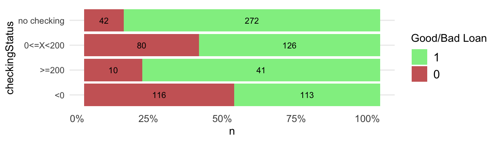
#>
#> [[2]]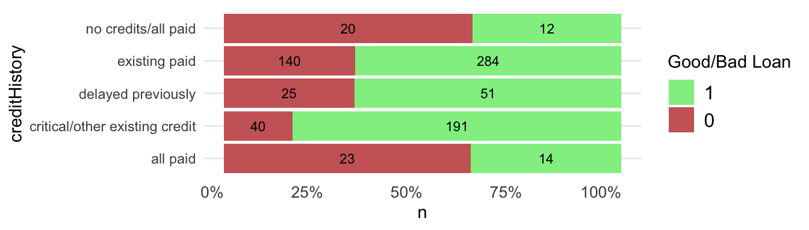
#>
#> [[3]]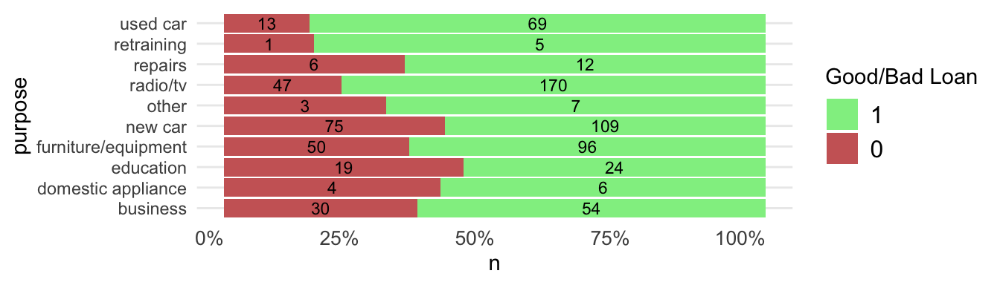
#>
#> [[4]]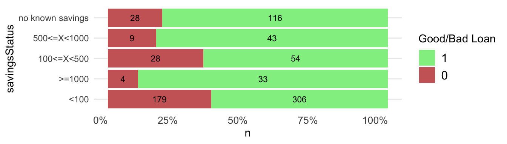
#>
#> [[5]]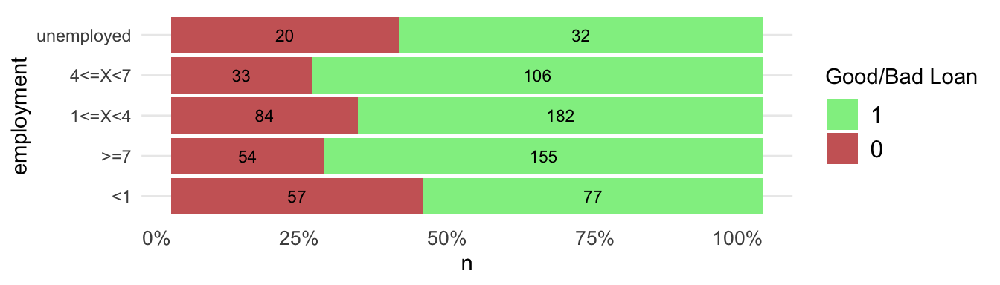
#>
#> [[6]]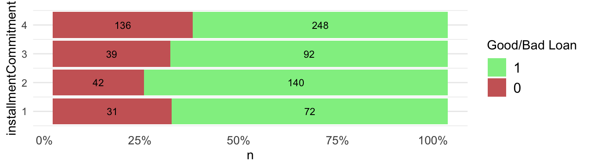
#>
#> [[7]]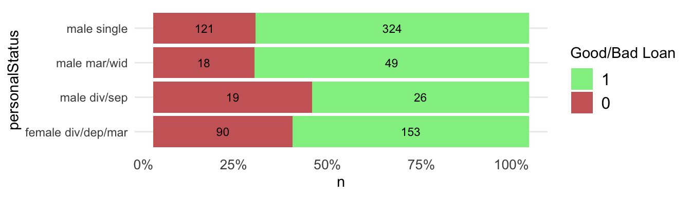
#>
#> [[8]]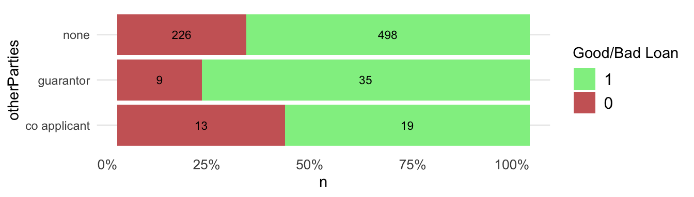
#>
#> [[9]]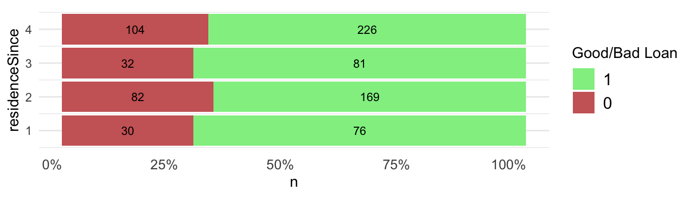
#>
#> [[10]]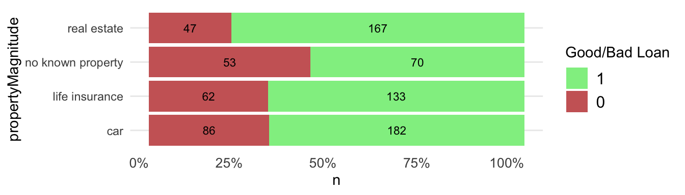
#>
#> [[11]]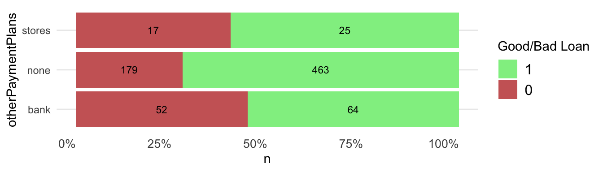
#>
#> [[12]]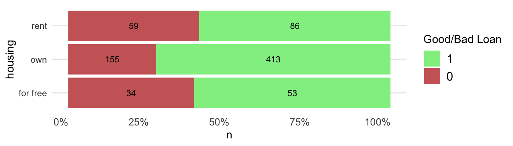
#>
#> [[13]]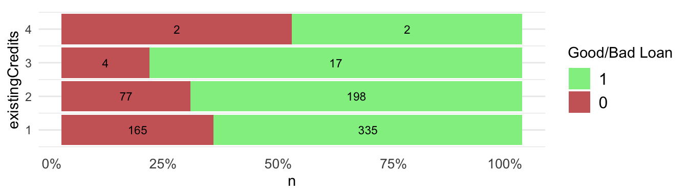
#>
#> [[14]]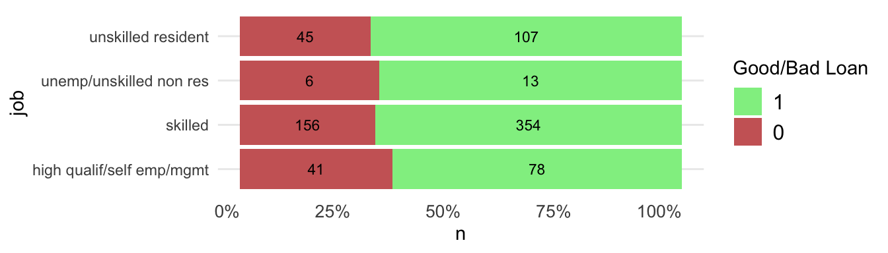
#>
#> [[15]]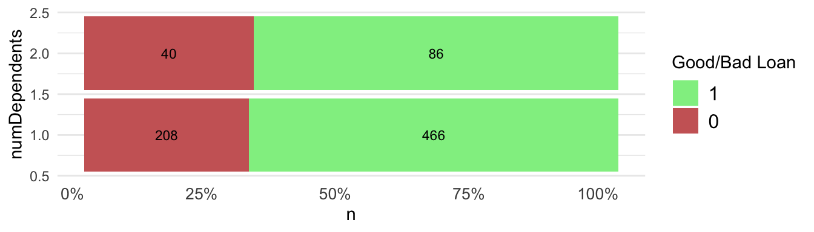
#>
#> [[16]]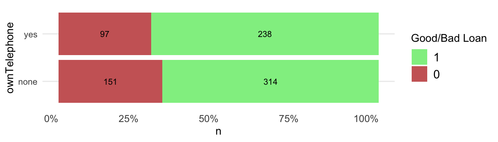
#>
#> [[17]]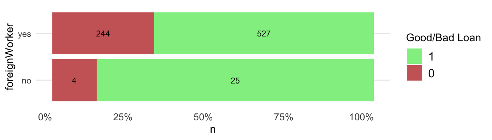
#>
#> [[18]]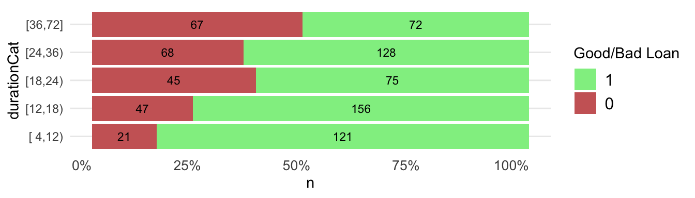
#>
#> [[19]]
#>
#> [[20]]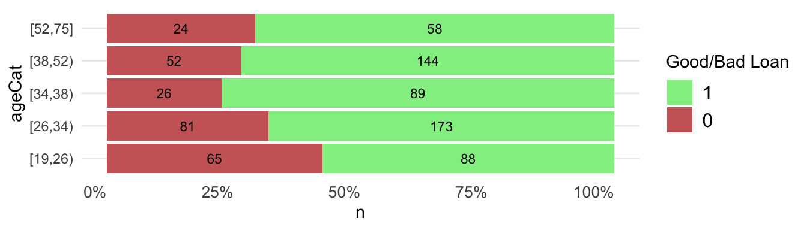
CORELS
Prepare data for Corels
Using the recipes package in tidymodels we create a recipe that converts the three continuous value columns into categories, then convert each category into its own individual dummy 0/1 column.
# create the data preperation recipe
credit_recipe <-
recipes::recipe(class ~ .,
data = trainData
) %>%
# 1 Apply the funModeling::discretize_rgr() cut points to continuous columns that maximise the information gain ratio on the training data only
recipes::step_mutate(age = base::cut(age, breaks = c("-inf", age_cat_cuts, "inf"), right = FALSE, dig.lab = 10)) %>%
recipes::step_mutate(duration = base::cut(duration, breaks = c("-inf", duration_cat_cuts, "inf"), right = FALSE, dig.lab = 10)) %>%
recipes::step_mutate(creditAmount = base::cut(creditAmount, breaks = c("-inf", amount_cat_cuts, "inf"), right = FALSE, dig.lab = 10)) %>%
# 2 ensure column values that are words do not have spaces. This will form better dummy column names that tidycorels needs where the value each dummy column represents is shown by a single delimiter (e.g. the underscore step_dummy creates)
recipes::step_mutate_at(recipes::all_predictors(), fn = list(~ base::gsub(pattern = "_", replacement = ".", x = .))) %>%
# 3 convert each value of each predictor into its own 0/1 binary column
recipes::step_mutate_at(recipes::all_predictors(), fn = list(~ as.factor(.))) %>%
recipes::step_dummy(recipes::all_predictors(), one_hot = TRUE) %>%
# 4 convert each value of the outcome column into its own 0/1 binary column
recipes::step_mutate_at(recipes::all_outcomes(), fn = list(~ as.factor(.))) %>% # step_dummy requires variable values to be factors
recipes::step_dummy(recipes::all_outcomes(), one_hot = TRUE)
# Train the data preperation recipe on the training data
credit_recipe_trained <- recipes::prep(credit_recipe,
training = trainData,
retain = TRUE)
# Extract the train data with recipe applied (juice), and the same recipe applied to the test data (bake) data
credit_train_preprocessed <- recipes::juice(credit_recipe_trained)
credit_test_preprocessed <- recipes::bake(credit_recipe_trained,
new_data = testData)Run tidycorels
We can now run tidycorels::tidy_corels() function on the
prepared training data. We could consider varying the regularization
argument in corels. This value, “can be thought of as a penalty
equivalent to misclassifying 1% of the data when increasing the length
of a rule list by one association rule.” When the regulraization
value is low many rules are created that could overfit to error in
the training data. A higher value leads to fewer rules which may
generalise better to unseen test data. Here we simply use the default
value of 0.01 that leads to a small number of rules.
credit_train_model <-
tidycorels::tidy_corels(
df = credit_train_preprocessed,
label_cols = c("class_X0", "class_X1"),
value_delim = "_",
run_bfs = TRUE,
calculate_size = TRUE,
run_curiosity = TRUE,
regularization = 0.01,
curiosity_policy = 3
)Here are the Corels rules for predicting a good loan.
credit_train_model$corels_console_output[2:7]
#> [1] ""
#> [2] ""
#> [3] "OPTIMAL RULE LIST"
#> [4] "if ({creditHistory:all.paid}) then ({class:X0})"
#> [5] "else if ({checkingStatus:no.checking}) then ({class:X1})"
#> [6] "else if ({duration:X.36..Inf.}) then ({class:X0})"And we can view the Corels rules as a D3 network sankey diagram when applied to the training data.
networkD3::sankeyNetwork(# edges
Links = credit_train_model$sankey_edges_df,
Value = "value",
Source = "source",
Target = "target",
# nodes
Nodes = credit_train_model$sankey_nodes_df,
NodeID = "label",
# format
fontSize = 12,
nodeWidth = 40,
sinksRight = TRUE
)And with some manipualation of the nodes and edges data, the rules can be viewed as a visNetwork visualisation.
rule_count <- base::nrow(credit_train_model$rule_performance_df)
# extract the rule order (or levels)
level <- credit_train_model$rule_performance_df %>%
dplyr::mutate(level = dplyr::row_number()) %>%
dplyr::rename(level_label = rule) %>%
dplyr::select(level_label,level)
# rename the edges
edges <- credit_train_model$sankey_edges_df %>%
dplyr::rename(from = source, to = target) %>%
dplyr::mutate(title = value)
# add the levels
nodes <- credit_train_model$sankey_nodes_df %>%
dplyr::rename(id = ID) %>%
dplyr::mutate(level_label = stringi::stri_trim_both(stringi::stri_sub(label,1,-4))) %>%
dplyr::left_join(level) %>%
dplyr::mutate(level = case_when(is.na(level) ~ as.numeric(rule_count),TRUE ~as.numeric(level))) %>%
dplyr::rename(title = level_label)
visNetwork::visNetwork(nodes, edges, width = "100%") %>%
visNetwork::visNodes(size = 12) %>%
visNetwork::visEdges(arrows = "to") %>%
visNetwork::visHierarchicalLayout(direction = "UD",
levelSeparation = 80) %>%
visNetwork::visInteraction(navigationButtons = TRUE) %>%
visNetwork::visOptions(highlightNearest = list(enabled = T, hover = T),
nodesIdSelection = T,
collapse = TRUE)A dataframe of just the true label, the columns used in the Corels rules, and the Corels predictions is returned. The columns have been ordered for you to work well in an alluvial plot.
p <- easyalluvial::alluvial_wide(credit_train_model$alluvial_df,
NA_label = "not used",
col_vector_flow =c("#CC6666","lightgreen"),
auto_rotate_xlabs = FALSE) +
ggplot2::labs(
title = "Corels if-then-else logic applied to training data",
subtitle = " From truth (target_X1) to Corels classification (corels_label)"
) + ggplot2::scale_x_discrete(guide = guide_axis(n.dodge=2))
p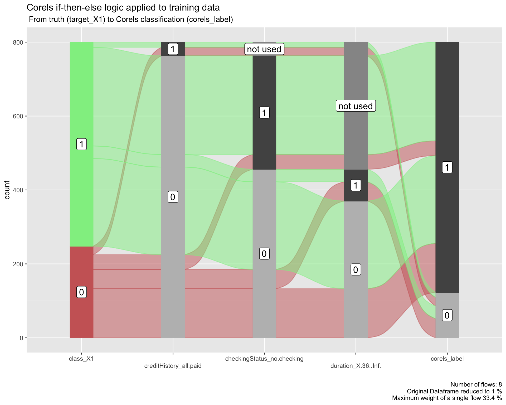
We can also create an interactive version of the alluvial plot.
parcats::parcats(p = p,
data_input = credit_train_model$alluvial_df,
marginal_histograms = FALSE,
hoveron = 'dimension',
hoverinfo = 'count',
labelfont = list(size = 11)
)Corels performance on test
Next we use the function tidycorels::corels_predict() to
apply the Corels rules created on the training data to the test data
that has already been pre-processed using the recipe created on the
training data.
credit_test_predict <-
tidycorels::predict_corels(
model = credit_train_model,
new_df = credit_test_preprocessed
)We can now use the test data that has been labelled using the Corels rules and compare this to the true label to create a confusion matrix along with performance statistics.
conf_matrix <-
credit_test_predict$new_df_labelled %>%
yardstick::conf_mat(
truth = "class_X1",
estimate = "corels_label"
)
ggplot2::autoplot(conf_matrix, "heatmap") +
labs(title = "Corels Classifications",
caption = "The columns represent the actual classification and the rows the predicted classification.")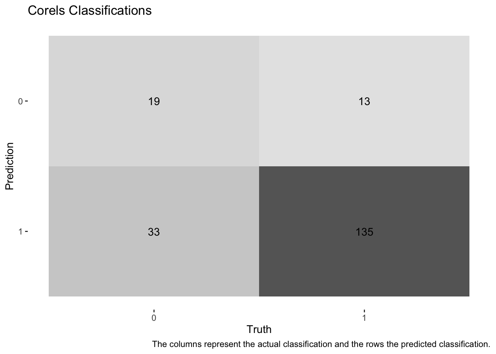
summary(conf_matrix,
event_level = "second") %>%
dplyr:::mutate(.estimate = round(.estimate, digits = 3)) %>%
dplyr::select(.metric, .estimate) %>%
dplyr::filter(.metric %in% c("accuracy","bal_accuracy","precision", "recall", "f_meas")) %>%
dplyr::mutate(.estimate = formattable::color_tile("white", "orange")(.estimate)) %>%
kableExtra::kable(escape = F,
caption = "Corels Test data Performance") %>%
kableExtra::kable_styling("hover", full_width = F)| .metric | .estimate |
|---|---|
| accuracy | 0.770 |
| bal_accuracy | 0.639 |
| precision | 0.804 |
| recall | 0.912 |
| f_meas | 0.854 |
Because, “It is worse to class a customer as good when they are bad (5), than it is to class a customer as bad when they are good (1).” (see), precision is a useful metric. It measures the proportion of True Positives (135 labelled good loans that were actually good), out of the True Positives plus False Positives (33 labelled good loans that were actually bad). This is the bottom row of the confusion matrix: 135 / (33 + 135) = 0.804.
By inspecting the alluvial plot on test data we can easily see where and why the rules have succeeded or failed to label the unseen test data correctly.
p <- credit_test_predict$alluvial_df %>%
easyalluvial::alluvial_wide(stratum_width = 0.2,
NA_label = "not used",
col_vector_flow =c("#CC6666","lightgreen")) +
ggplot2::theme_minimal() +
ggplot2::labs(
title = "Corels if-then-else logic applied to test data",
subtitle = " From truth (far left column) to Corels classification (far right column)"
) + ggplot2::scale_x_discrete(guide = guide_axis(n.dodge=2))
p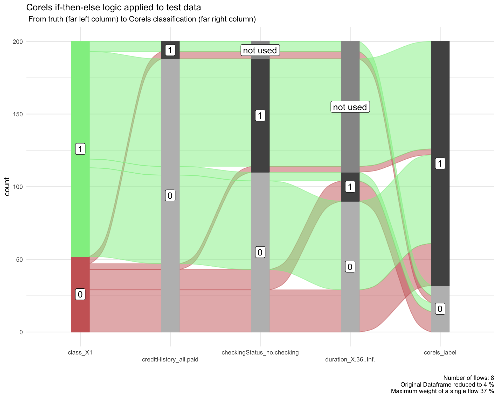
We can also create an interactive version of the alluvial plot.
parcats::parcats(p = p,
data_input = credit_test_predict$alluvial_df,
marginal_histograms = FALSE,
hoveron = 'dimension',
hoverinfo = 'count',
labelfont = list(size = 11)
)A data frame of the performance of each rule is also provided. This
shows us that one of the weaker rules is
creditHistory_no.credits.all.paid.
credit_test_predict$rule_performance_df %>%
dplyr::mutate(rule_perc_correct = round(rule_perc_correct,1)) %>%
dplyr::mutate(rule_perc_correct = formattable::color_tile("white", "orange")(rule_perc_correct)) %>%
dplyr::mutate(rule_fire_count = formattable::color_tile("white", "lightblue")(rule_fire_count)) %>%
kableExtra::kable(escape = F,
caption = "Corels Performance for each rule in order") %>%
kableExtra::kable_styling("hover", full_width = F)| rule | rule_fire_count | rule_correct | rule_perc_correct |
|---|---|---|---|
| creditHistory_all.paid | 12 | 5 | 41.7 |
| checkingStatus_no.checking | 78 | 74 | 94.9 |
| duration_X.36..Inf. | 20 | 14 | 70.0 |
| else | 90 | 61 | 67.8 |
If we examine rule success on the training data the weaker
creditHistory_no.credits.all.paid does perform better in
the training data. However, we usually cannot use test data to improve a
classifier without risking overfitting (though one option would be to
use all of the data to build Corels rules with cross validation).
credit_train_model$rule_performance_df %>%
dplyr::mutate(rule_perc_correct = round(rule_perc_correct,1)) %>%
dplyr::mutate(rule_perc_correct = formattable::color_tile("white", "orange")(rule_perc_correct)) %>%
dplyr::mutate(rule_fire_count = formattable::color_tile("white", "lightblue")(rule_fire_count)) %>%
kableExtra::kable(escape = F,
caption = "Corels Performance for each rule in order") %>%
kableExtra::kable_styling("hover", full_width = F)| rule | rule_fire_count | rule_correct | rule_perc_correct |
|---|---|---|---|
| creditHistory_all.paid | 37 | 23 | 62.2 |
| checkingStatus_no.checking | 307 | 267 | 87.0 |
| duration_X.36..Inf. | 86 | 52 | 60.5 |
| else | 370 | 237 | 64.1 |
XGBboost
Next we try XGBoost that is a Gradient Boosting Method:
“GBMs build an ensemble of shallow trees in sequence with each tree learning and improving on the previous one. Although shallow trees by themselves are rather weak predictive models, they can be “boosted” to produce a powerful “committee” that, when appropriately tuned, is often hard to beat with other algorithms.” From “Hands on Machine Learning with R”
All of the modelling steps below are adapated from the excellent tidymodels with drake.
Data recipe
In the data recipe only the categorical columns are one-hot encoded into one column per value.
xgb_pre_proc <-
recipes::recipe(class ~ ., data = trainData) %>%
recipes::step_dummy(recipes::all_nominal(),-recipes::all_outcomes(),one_hot = TRUE)Define model and its parameters
Here we define which boost tree parameters will be tuned later and which we fix.
xgb_mod <-
parsnip::boost_tree(
mtry = tune::tune(),
trees = 500,
min_n = tune::tune(),
tree_depth = tune::tune(),
learn_rate = 0.01,
sample_size = tune::tune()
) %>%
parsnip::set_mode("classification") %>%
parsnip::set_engine("xgboost")Add recipe and model to a workflow
The workflow is therefore the data preparation recipe and the model specification (including its type and which parameters are to be tuned later).
xgb_wflow <-
workflows::workflow() %>%
workflows::add_recipe(xgb_pre_proc) %>%
workflows::add_model(xgb_mod)Define model parameters
Let’s now define the parameters by looking at the workflow
xgb_wflow %>%
dials::parameters()
#> Collection of 4 parameters for tuning
#>
#> identifier type object
#> mtry mtry nparam[?]
#> min_n min_n nparam[+]
#> tree_depth tree_depth nparam[+]
#> sample_size sample_size nparam[+]
#>
#> Model parameters needing finalization:
#> # Randomly Selected Predictors ('mtry')
#>
#> See `?dials::finalize` or `?dials::update.parameters` for more information.mtry is the number of predictors that will be randomly
sampled at each split when creating the tree models. This is set to
range between 40% of the features to all of the features.
feat_count <- ncol(xgb_pre_proc %>%
recipes::prep() %>%
recipes::juice() %>%
dplyr::select(-class))
mtry_min <- base::floor(feat_count * 0.4)
xgb_params <-
xgb_wflow %>%
dials::parameters() %>%
stats::update(
mtry = dials::mtry(range = c(mtry_min, feat_count)),
sample_size = dials::sample_prop(c(0.5, 1)),
tree_depth = dials::tree_depth(range = c(4L, 10L))
)Now that the range of the parameters has been set, a grid of possible
values between those ranges can be created with
dials::grid_max_entropy(), “to construct parameter
grids that try to cover the parameter space such that any portion of the
space has an observed combination that is not too far from it.”
set.seed(1645)
xgb_grid <-
xgb_params %>%
dials::grid_max_entropy(size = 10) %>%
dplyr::mutate(sample_size = as.double(sample_size))
xgb_grid
#> # A tibble: 10 × 4
#> mtry min_n tree_depth sample_size
#> <int> <int> <int> <dbl>
#> 1 35 40 8 0.854
#> 2 59 5 6 0.625
#> 3 27 5 4 0.998
#> 4 27 35 7 0.601
#> 5 49 37 6 0.548
#> 6 40 26 9 0.678
#> 7 31 35 5 0.856
#> 8 32 8 8 0.581
#> 9 36 10 9 0.837
#> 10 47 13 4 0.524Tune XGBoost model
We can now tune the model by searching the grid of parameters.
tune_xgb_grid <-
tune::tune_grid(xgb_wflow,
resamples = folds,
grid = xgb_grid,
param_info = xgb_params,
metrics = yardstick::metric_set(roc_auc),
control = tune::control_grid(
verbose = TRUE,
save_pred = TRUE
)
)
tune_xgb_grid
#> # Tuning results
#> # 5-fold cross-validation
#> # A tibble: 5 × 5
#> splits id .metrics .notes .predictions
#> <list> <chr> <list> <list> <list>
#> 1 <split [640/160]> Fold1 <tibble [10 × 8]> <tibble [0 × 3]> <tibble>
#> 2 <split [640/160]> Fold2 <tibble [10 × 8]> <tibble [0 × 3]> <tibble>
#> 3 <split [640/160]> Fold3 <tibble [10 × 8]> <tibble [0 × 3]> <tibble>
#> 4 <split [640/160]> Fold4 <tibble [10 × 8]> <tibble [0 × 3]> <tibble>
#> 5 <split [640/160]> Fold5 <tibble [10 × 8]> <tibble [0 × 3]> <tibble>Tune with iterative Bayesian optimisation
“..iterative search can be used to analyze the existing tuning parameter results and then predict which tuning parameters to try next.” see
set.seed(1600)
xgb_bayes_tune <-
tune::tune_bayes(xgb_wflow,
resamples = folds,
iter = 5L,
param_info = xgb_params,
metrics = yardstick::metric_set(roc_auc),
initial = tune_xgb_grid,
control = tune::control_bayes(
verbose = TRUE,
save_pred = TRUE,
no_improve = 5L
)
)Select best model parameters
We can select the hyperparameters giving the best results with
tune::select_best() according to our chosen metric (area
under the ROC curve).
best_xgb <-
xgb_bayes_tune %>%
tune::select_best(metric = "roc_auc")
best_xgb
#> # A tibble: 1 × 5
#> mtry min_n tree_depth sample_size .config
#> <int> <int> <int> <dbl> <chr>
#> 1 28 2 8 0.500 Iter5We now use tune::finalize_workflow() to generate a
workflow object that adds the best performing model.
best_xgb_wfl <-
tune::finalize_workflow(xgb_wflow,
parameters = best_xgb
)
best_xgb_wfl
#> ══ Workflow ════════════════════════════════════════════════════════════════════
#> Preprocessor: Recipe
#> Model: boost_tree()
#>
#> ── Preprocessor ────────────────────────────────────────────────────────────────
#> 1 Recipe Step
#>
#> • step_dummy()
#>
#> ── Model ───────────────────────────────────────────────────────────────────────
#> Boosted Tree Model Specification (classification)
#>
#> Main Arguments:
#> mtry = 28
#> trees = 500
#> min_n = 2
#> tree_depth = 8
#> learn_rate = 0.01
#> sample_size = 0.500337002937589
#>
#> Computational engine: xgboostAnd then generate a fitted model from that workflow on the training data.
final_fit <-
best_xgb_wfl %>%
parsnip::fit(data = trainData)
final_fit
#> ══ Workflow [trained] ══════════════════════════════════════════════════════════
#> Preprocessor: Recipe
#> Model: boost_tree()
#>
#> ── Preprocessor ────────────────────────────────────────────────────────────────
#> 1 Recipe Step
#>
#> • step_dummy()
#>
#> ── Model ───────────────────────────────────────────────────────────────────────
#> ##### xgb.Booster
#> raw: 1001.2 Kb
#> call:
#> xgboost::xgb.train(params = list(eta = 0.01, max_depth = 8L,
#> gamma = 0, colsample_bytree = 1, colsample_bynode = 0.459016393442623,
#> min_child_weight = 2L, subsample = 0.500337002937589, objective = "binary:logistic"),
#> data = x$data, nrounds = 500, watchlist = x$watchlist, verbose = 0,
#> nthread = 1)
#> params (as set within xgb.train):
#> eta = "0.01", max_depth = "8", gamma = "0", colsample_bytree = "1", colsample_bynode = "0.459016393442623", min_child_weight = "2", subsample = "0.500337002937589", objective = "binary:logistic", nthread = "1", validate_parameters = "TRUE"
#> xgb.attributes:
#> niter
#> callbacks:
#> cb.evaluation.log()
#> # of features: 61
#> niter: 500
#> nfeatures : 61
#> evaluation_log:
#> iter training_logloss
#> 1 0.6893940
#> 2 0.6858475
#> ---
#> 499 0.2958099
#> 500 0.2954935Variable importance
The {vip}
package provides variable importance plots. Further methods are well
described in the Interpretable
machine learning book.
final_fit %>%
workflows::extract_fit_parsnip() %>%
vip::vip(
geom = "col",
num_features = 12L,
include_type = TRUE
)
XGBoost performance on train
First we plot the ROC curve for all cut points of the probability of a good loan.
xgb_train_preds <- final_fit %>%
stats::predict(
new_data = trainData,
type = "prob"
) %>%
dplyr::bind_cols(trainData %>% dplyr::select(class))
# Generate the full ROC curve
xgb_train_preds$class <- as.factor(xgb_train_preds$class)
xgb_roc_curve <- yardstick::roc_curve(xgb_train_preds,
truth = class,
.pred_1,
event_level = 'second'
)
# Get the AUC value and plot the curve
tune::autoplot(xgb_roc_curve) +
labs(
title = sprintf(
"AUC for XGBoost model on train set: %.2f",
yardstick::roc_auc(xgb_train_preds,
truth = class,
.pred_1,
event_level = 'second'
) %>%
dplyr::pull(.estimate)
)
)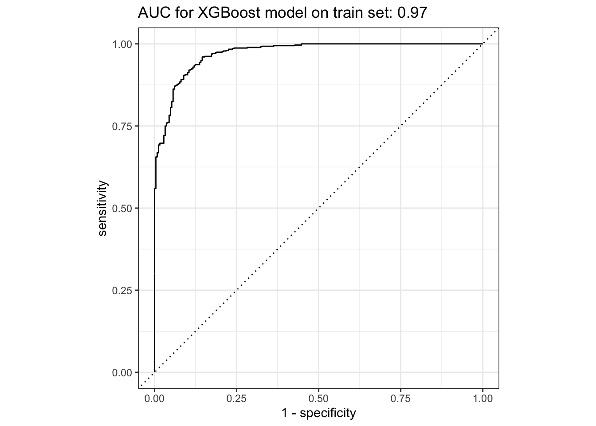
To create a confusion matrix requires we select a cut off in the
probability to label each record. We use pROC::coords from
the pROC package to select
the best threshold.
# calculate best threshold for classification label
my_roc <- pROC::roc(
predictor = xgb_train_preds$.pred_1,
response = xgb_train_preds$class
)
threshold <- pROC::coords(my_roc, "best", ret = "threshold", transpose = TRUE) %>%
as.double()
xgb_train_preds <-
xgb_train_preds %>%
dplyr::mutate(.pred_class = dplyr::case_when(
.pred_1 >= threshold ~ 1,
TRUE ~ 0
)) %>%
dplyr::mutate(.pred_class = as.factor(.pred_class))
# confusion matrix
cmat_train <- yardstick::conf_mat(xgb_train_preds,
truth = "class",
estimate = ".pred_class"
)
ggplot2::autoplot(cmat_train, "heatmap")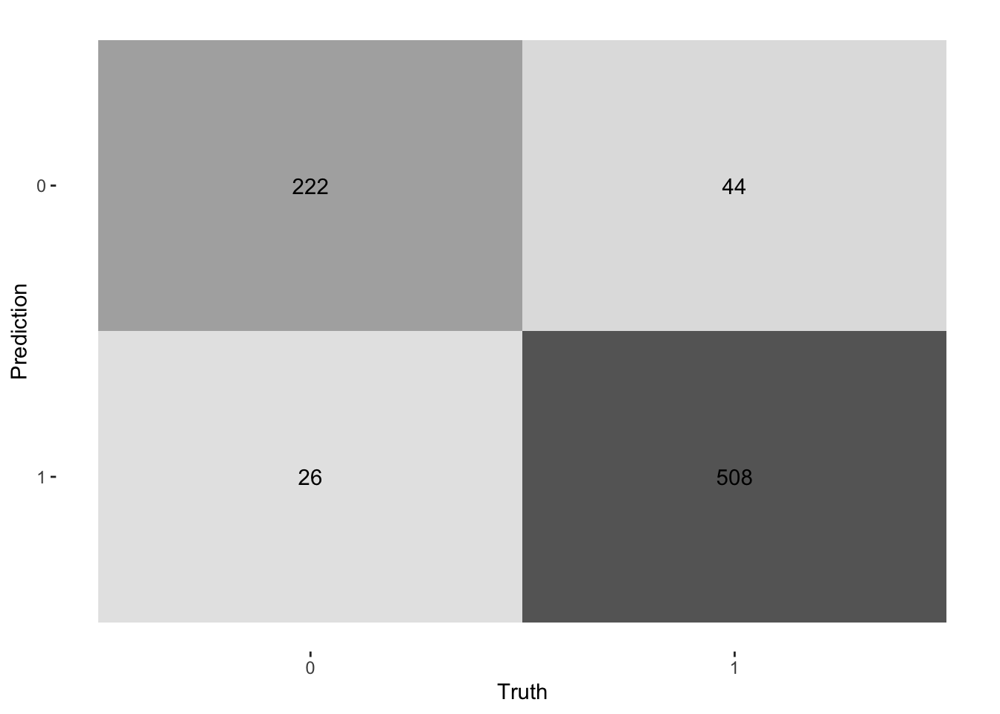
The confusion matrix can be used to generate the performance statistics below. All metrics are impressively high on the training data and superior to Corels. However, this could be due to overfitting. We can now use the test data to test for over fitting.
summary(cmat_train,
event_level = "second") %>%
dplyr:::mutate(.estimate = round(.estimate, digits = 3)) %>%
dplyr::select(.metric, .estimate) %>%
dplyr::filter(.metric %in% c("accuracy","bal_accuracy","precision", "recall", "f_meas")) %>%
dplyr::mutate(.estimate = formattable::color_tile("white", "orange")(.estimate)) %>%
kableExtra::kable(escape = F,
caption = "Corels Test data Performance") %>%
kableExtra::kable_styling("hover", full_width = F)| .metric | .estimate |
|---|---|
| accuracy | 0.912 |
| bal_accuracy | 0.908 |
| precision | 0.951 |
| recall | 0.920 |
| f_meas | 0.936 |
XGBoost performance on test
In contrast to the training data, the test set performance is much lower for all metrics.
An important evaluation metric is precision. This is because incorrectly labelling bad loans as good has the greatest cost.
xgb_test_preds <- final_fit %>%
stats::predict(
new_data = testData,
type = "prob"
) %>%
dplyr::bind_cols(testData %>% dplyr::select(class))
xgb_test_preds <-
xgb_test_preds %>%
dplyr::mutate(.pred_class = dplyr::case_when(
.pred_1 >= threshold ~ 1,
TRUE ~ 0
)) %>%
dplyr::mutate(.pred_class = as.factor(.pred_class))
# Generate the full ROC curve
xgb_test_preds$class <- as.factor(xgb_test_preds$class)
xgb_roc_curve <- yardstick::roc_curve(xgb_test_preds,
truth = class,
.pred_1,
event_level = 'second'
)
# Get the AUC value and plot the curve
tune::autoplot(xgb_roc_curve) +
labs(
title = sprintf(
"AUC for XGBoost model on test set: %.2f",
yardstick::roc_auc(xgb_test_preds,
truth = class,
.pred_1,
event_level = 'second'
) %>%
dplyr::pull(.estimate)
)
)
# confusion matrix
cmat_test <- yardstick::conf_mat(xgb_test_preds,
truth = "class",
estimate = ".pred_class"
)
ggplot2::autoplot(cmat_test, "heatmap")
summary(cmat_test,
event_level = "second") %>%
dplyr:::mutate(.estimate = round(.estimate, digits = 3)) %>%
dplyr::select(.metric, .estimate) %>%
dplyr::filter(.metric %in% c("accuracy","bal_accuracy","precision", "recall", "f_meas")) %>%
dplyr::mutate(.estimate = formattable::color_tile("white", "orange")(.estimate)) %>%
kableExtra::kable(escape = F,
caption = "Corels Test data Performance") %>%
kableExtra::kable_styling("hover", full_width = F)| .metric | .estimate |
|---|---|
| accuracy | 0.790 |
| bal_accuracy | 0.740 |
| precision | 0.868 |
| recall | 0.845 |
| f_meas | 0.856 |
XGBoost underlying complex rules
The tidypredict package..
…reads the model, extracts the components needed to calculate the prediction, and then creates an R formula that can be translated into SQL
Then tidypredict::tidypredict_fit() is used to return
the formula in R dplyr::case_when() code required to
re-create the classification of the XGBoost model. Note how complex this
formula is in contrast to the simple Corels rules.
# tidypredict::tidypredict_fit(final_fit$fit$fit)